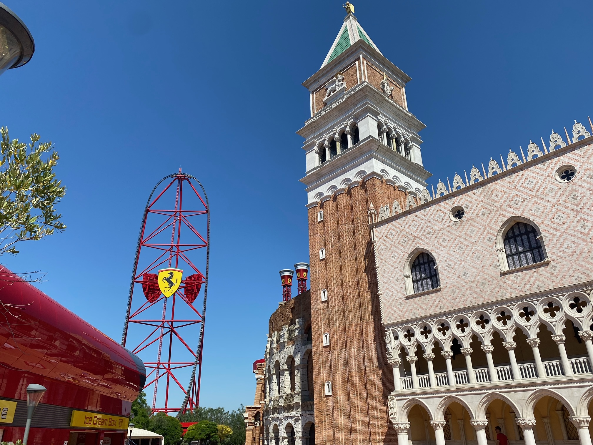
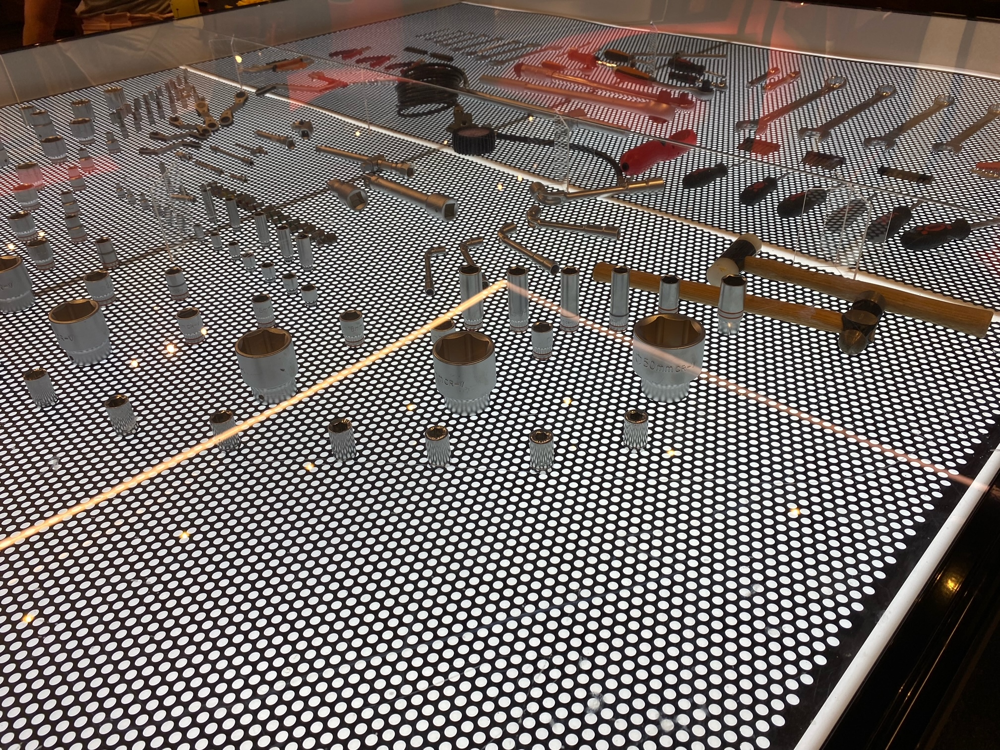
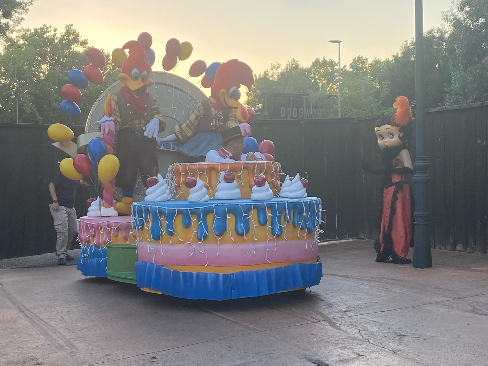

Tuesday was our last full day and we saved Ferrari Land for it. Me and Jake were excited. The girls less so.
I had seen on a queue times website that all the queues were around 15 minutes and the app said “15 mins” on previous days. I had been horribly mislead!
Ferrari Land has one big ride, Red Force which accelerates you to 112mph in 5 seconds then takes you vertically up. We wanted to warm up before going on Red Force. We started with a slow driving ride. Alison let me drive - it wasn’t very exciting. On the other track, Freya was getting annoyed at the kid in front of her who stopped at corners and took photos.
We weren’t quite ready for Red Force so we did the twin tower bouncing ride (Jake and Jenny went for a repeat ride). Jake wanted to go on everything so we went towards the kiddie rides. While waiting for them I went to loo and saw the queue times. Eek - almost everything was about an hour, including 1:50 for Red Force.
We had a wander round looking at the cars dotted around, the indoor car museum, the mock-ups of Italian cities and the pay-extra simulators. There was a stand to watch the start of Red Force. We watched a few set off and saw the front row in goggles. Why was that? In case of bird strike? Best not to think about it!

We found some aircon for lunch, which had more Ferrari memorabilia and a table full of tools.

Alison didn’t fancy Red Force so she went back to the hotel while the other four of us got in the 1:50 queue. Almost exactly 110 minutes later we were at the front of the queue. We were allocated rows 1 and 2 - how exciting!
Freya was very far from calm or excited so Jake and Jenny got the front-row goggles and we took the second row. The ride was excellent. It was very smooth and very fast. As we got over the top, Freya said “we got over” as she had been worried about roll-back, which is when the car doesn’t make it over. I didn’t hear her say anything but we all saw it as we watched the ride video. Jake and Jenny took off their goggles but didn’t stop giggling from the fun of the front row.
After nearly two hours queueing, a toilet stop was essential. Then some ice cream and then an air-conditioned ride. We went to the Ride of Legends, which was well over an hour earlier but now only 20 minutes.
There were lots of holding rooms and some cheesy Ferrari lines about Enzo designing cars to be driven by the heart rather than the hands. Sounds a bit dangerous to me. Eventually we got to the end and we realised it was just like Soarin’ at Disney (is it a ride?). It wasn’t as good as Soarin’ as the Ferrari cars on the screen were not-great CGI and there were no interesting smells.
After that we decided that we would re-ride Red Force if the queue was less than an hour. It was 50 minutes. Hooray. Almost exactly 50 minutes later we were offered rows 1 and 2 again. Freya was still not keen to wear some shared sweaty goggles so it was me and Jenny at the front. It was more exciting at the front but all agreed the second ride was much less smooth.
We left as the park shut at 5pm to go back to the hotel to see Alison and cool off. We had booked early buffet tea so we could go back into the main park for our last night. There were a few square millimetres of my calves not bitten so I wanted to give the biters one last chance.
There wasn’t much time so we had a specific plan. The kids rode the log flume first while me and Alison waved at Betty Boo and the Woodpeckers. The kids got wet. Serpientes broke as the kids got on so we went to the drop ride that I bottled last time. All five of us went on this time.

When the kids went last time, they got pulled up and then dropped. This time, we got pulled up, tilted forward at the top and then dropped. Apparently, it’s meant to always tip forward but it didn’t work the first time. The other four kept their eyes open and said it was good.
Serpientes was fixed so the kids squeezed in a ride. Jake decided Shambala in the dark would be the last ride. It was now time that we needed to set off to get there before it closed. We strode round the park and got there in good time. As always, it was excellent and it is particularly fun in the dark. We got off 1 minute after 11pm so no time for any final rides in any case.
We followed the parade to the park exit. It felt weird leaving a theme park while a fireworks show was starting, but we’d already seen it from the perfect spot and we had an early start the next day.
We really enjoyed the parks and feel like we did all that we wanted.
Jake spotted a huge spider’s web on the bushes next to to the lake earlier in the holiday. He also spotted that those bushes (and not the ones adjacent without webs) had little light green balls on them. Were they buds or spider eggs? Jenny chose the pitch black on the walk back to pick one to find out. They were buds.
Early alarm and early breakfast the next morning ready for the bus to the airport. We arrived on the bus at 9:30. We were unloaded from the bus, checked-in, through security and passport control before 10. Much better than Leeds-Bradford. The journey home was very uneventful.
We had a great time and now need a rest.
Cheers